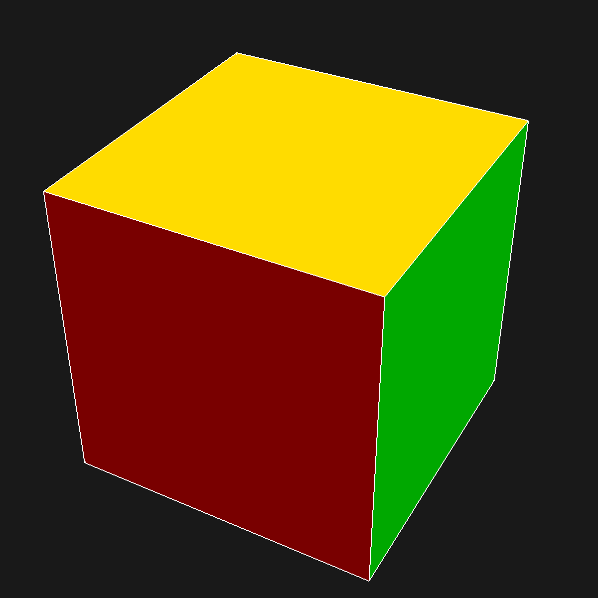

Special Orthogonal Group of $3 \times 3$ Matrices
After much trepidation, I've decided to do my blog post on a particular group: The special orthogonal group of 3 by 3 matrices, often stylized as $SO_3(\mathbb{R})$, where R represents the field of real numbers. This post will discuss the manner in which $SO_3(\mathbb{R})$ upholds the group axioms, why it is important in the fields of geometry and aerospace in particular. But before we define what a rotation matrix is in 3D, it may be best to lead with an example, coupled with a visualization about how this even looks. Let us suppose that, in this example, we are rotating along the z-axis by a specified angle $\theta$. We can model this rotation around the z-axis with the following 3x3 matrix: (Recall that in linear algebra, we define rotations as linear transformations, and that matrices can encode linear transformations.)
$$\begin{bmatrix} \cos (\theta) & -\sin (\theta) & 0 \\ \sin (\theta)& \cos (\theta) & 0 \\ 0 & 0 & 1 \end{bmatrix}$$
The matrix above describes the aforementioned rotation centered around the z-axis, and is visualized as continuous rotation on the 3D rendering of the cube from $\theta = 0$ to $\theta = 2\pi$.

The matrix listed above us descibes as the rotational matrix of the z-axis, and is one of three forms of matrices included in $SO_3(R)$.
This particular group of matrices takes 3 forms:
Rolling along the x axis,
$$R(\theta)= \begin{bmatrix} 1& 0 & 0 \\ 0 & \cos (\theta) & -\sin (\theta) \\ 0 & \sin (\theta) & \cos (\theta) \end{bmatrix}$$
Pitching along the y axis,
$$ P(\theta)= \begin{bmatrix} \cos (\theta) & 0 & \sin (\theta) \\ 0 & 1 & 0 \\ -\sin (\theta) & 0 & \cos (\theta) \end{bmatrix}$$
and "yaw"ing along the z axis (Which was our example matrix!)
$$Y(\theta)= \begin{bmatrix} \cos (\theta) & -\sin (\theta) & 0 \\ \sin (\theta)& \cos (\theta) & 0 \\ 0 & 0 & 1 \end{bmatrix} $$
Given a right-handed orthonormal basis, denoted as $\beta= [e_1, e_2, e_3 ]$, we can describe the transformation of this basis of vectors, $\beta'$, using the appropriate roll, pitch, and yaw matrices.
Proving $SO_3(R)$ is a group
Proof: To begin our proof, will will show that $SO_3(R)$ forms a group under matrix multiplication. To this end, we will show that $SO_3(R)$ follows the following group axioms:
Associativity
It is important to note that associativity is inherited in the case of $SO_3(R)$, since $SO_3(R) \leq GL_{+}(R)$. Since matrix multiplication is associative in the case of the general linear group of 3 by 3 matrices, it is also true for a subgroup of this group. (It is worth mentioning that associativity holds true across matrix multiplication in general and not specifically square matrices, provided their dimensions agree.) Therefore, associativity is preservered in $SO_3(R)$.
Identity
Let $I_{3x3}$ represent our idenity matrix for 3 by 3 matrices, as such:
$$ I_{3x3}= \begin{bmatrix} 1& 0 & 0 \\ 0 & 1 & 0 \\ 0 & 0 & 1 \end{bmatrix}$$
Let us note that det($I$) = 1, and $I^{T}I = II^{T} = I$. Also, for any $\alpha \in SO_3(R)$,
$$ \alpha I = I\alpha = \alpha$$
therefore, $SO_3(R)$ contains an identity element.
Inverse
From various facts and theorems stemming from linear algebra, it is known that for an orthogonal matrix, the inverse of that orthogonal matrix is equal to the transpose of the same matrix. Notice that because every matrix $\alpha \in SO_3(R)$ is orthogonal, $\alpha^T = \alpha^{-1}$. Therefore, for every matrix in the group $\alpha \in SO_3(R)$, there exists an inverse element.
Closure under the Binary Operation
Because matrix multiplication is our binary operation, we will leverage some linear algebra facts to show that for any two matrices $\alpha_{1}, \alpha_{2} \in SO_3(R), \alpha_{1} \alpha_{2} \in SO_3(R)$. To begin, if we multiply $\alpha_{1} \alpha_{2}$ by it's transpose (inverse element), this yields
$$ (\alpha_{1} \alpha_{2})^T(\alpha_{1} \alpha_{2}) = (\alpha_{2})^T (\alpha_{1})^T(\alpha_{1} \alpha_{2}) $$
$$ (\alpha_{1} \alpha_{2})^T(\alpha_{1} \alpha_{2}) = (\alpha_{2})^T (\alpha_{1})^T(\alpha_{1}) \cdot \alpha_{2} $$
$$ (\alpha_{1} \alpha_{2})^T(\alpha_{1} \alpha_{2}) = (\alpha_{2})^T \cdot I \cdot \alpha_{2} $$
$$ (\alpha_{1} \alpha_{2})^T(\alpha_{1} \alpha_{2}) = (\alpha_{2})^T \alpha_{2} = I $$
Thus, $\alpha_{1} \alpha_{2}$ is orthogonal. To show that the determinant is 1, let us note that from linear algebra, it is known that $det( \alpha_{1} \cdot \alpha_{2} ) = det(\alpha_1) det(\alpha_2)$. However, since both matrices are specified to be orthogonal, this simplifies to $det(1 \cdot 1) = det(1) \cdot det(1) = 1.$ Therefore, since $\alpha_{1} \alpha_{2}$ is orthogonal with determinant 1, closure under the binary operation is confirmed, and $\alpha_{1} \alpha_{2} \in SO_3(R).$
Thus, $SO_3(R)$ forms a group. $\square$
Fun Facts about $SO_3(R)$
- For every matrix in the group, each column vector is of unit length (orthonormal).
- Every matrix in $SO_3(R)$ is composed of ONLY positive determinants (+1) only. With our determinant always being +1, we preserve the area and volume of the object being transformed.
- Often measuring angles from 0 to $2\Pi$, we parametize RPY using t as our parameter.
- This group is NOT abelian, since matrix multiplication is typically not commutative. Simply put, applying the RPY matrices in different orders will yield unique orientations.
- There are 3 generators for $SO_3(R)$ , each of which are the particular rotation matrices of the specified axis (x,y, or z)
- Despite there being infinitely many rotational matrices in our group (due to the fact that real numbers are continuous), this effectively means there are infinitesimal representations of rotations in 3D. However, this does not necessarily mean each representation is unique. For example if we take the following matrix:
$$R(\theta)= \begin{bmatrix} 1& 0 & 0 \\ 0 & \cos (\theta) & -\sin (\theta) \\ 0 & \sin (\theta) & \cos (\theta) \end{bmatrix}$$
where $\theta = 0$ and $\theta = 2\pi$, we find that
$$R(0) = R(2\pi) = \begin{bmatrix} 1& 0 & 0 \\ 0 & 1 & 0 \\ 0 & 0 & 1 \end{bmatrix}$$
which is to say that while we can rotate infinitely many times, there are not unique parameterizations in this manner, since as we have just shown, there are multiple ways to paramatize just one type of rotation.
Some Uses and Applications
In aeronautics, Cartesian coordinates are defined in aircrafts in terms of the aircraft's orientation. (These are also referred to as Euler angles!)
A lot of computer graphic systems that focus on 3D modeling use these angles to calculate rotation of solid body objects, and can help model paths not only objects in an arbitrary space, but also shifting in perspective. If we take the abstract object being gtransformed to be a camera for example, we have a method of rotating a camera across all 3 axis in 3D by means of our rotational matrices. Whether one is shifting around a given object or rotating the object themselves, the $SO_3(R)$ group has many applications whether its visualization or orienting through space.